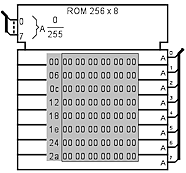
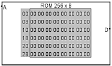
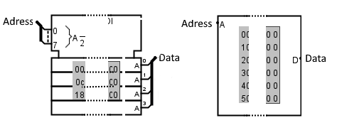
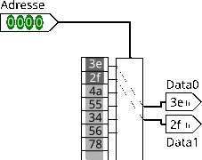

ROM
ROM
| Librairie : | Memory |  |
| Introduction : | 2.1.0 | |
| Apparence : |  |
Comportement
Le composant ROM stocke jusqu'à 16 777 216 valeurs spécifiées dans l'attribut Largeur d'adresse, chaque valeur pouvant comprendre jusqu'à 32 bits spécifiés dans l'attribut Largeur de données. Un circuit peut accéder aux valeurs actuelles de la ROM, mais il ne peut pas les modifier. L'utilisateur peut modifier des valeurs individuelles de manière interactive via l'outil "Pousser" ( ), ou l'utilisateur peut modifier l'ensemble du contenu via le menu contextuel.
), ou l'utilisateur peut modifier l'ensemble du contenu via le menu contextuel.
Les valeurs actuelles sont affichées à l'intérieur de l'image du composant dans la zone grise. Les adresses affichées sont énumérées en gris à gauche de la zone d'affichage. À l'intérieur, chaque valeur est indiquée en hexadécimal. La valeur de l'adresse sélectionnée est affichée en texte inversé (blanc sur noir).
Pins
L'attribut Apparence permet deux différents différents pour ce composant. Logisim Evolution présente les entrées à l'ouest et les sorties à l'est, je présente les pins du haut en bas et de l'ouest à l'est.
- Adresse
- Bus entrée : Sélectionne la position de la mémoire à laquelle le circuit accède actuellement.
- Sortie Data
- Bus Sortie : Il émet les données qui seront lues à la position spécifiée par la valeur des broches d'adresse
- Data0 à Data7
-
Bus Sortie : Ces bus sont présent si la propriété Nombre de lignes est différente de simple. Leur fonction est la même que la sortie Data avec cette différence, Data0 émet les données de la position mémoire spécifiée par la valeur des broches d'adresse, Data1 émet adresse + 1, Data2 émet adresse + 2 et ainsi de suite.
La propriété Autoriser les accès non alignés ? détermine si une erreur est générée quand l'adresse n'est pas alignée sur un multiple du nombre de lignes.

Attributs
Lorsque le composant est sélectionné ou en cours d'ajout, les chiffres 0 à 9 modifient son attribut Largeur de donnée d'adresse et les chiffres Alt-0 à Alt-9 modifient son attribut Largeur de données.
- Largeur d'adresse
- La largeur en bit de l'adressage. Le nombre de valeurs stockées dans la RAM est de 2Largeur d'adresse.
- Largeur de donnée
- La largeur de donnée en bit de chaque valeur individuelle dans la mémoire.
- Nombre de lignes
- Détermine le nombre de lignes de donnée présente en sortie 1,2,4 ou 8. La ligne 0 pointe l'adresse 1, la ligne 1 pointe à l'adresse+1 et ainsi de suite.
- Autoriser les accès non alignés ?
- Cette propriété est présente seulement quand la propriété Nombre de lignes est différente de Simple. Détermine si les lignes de donnée peuvent interagir avec l'ensemble des adresses de la mémoire ou si les lignes de donnée sont alignées sur les positions mémoire multiples de leur nombre, par exemple si vous avez deux lignes, la première ligne est reliée à adresse + 0 la seconde à adresse + 1 et votre adressage ne peut recevoir que des valeurs multiples de 2 dans le cas contraire les sorties seront en erreur (E).
- Contenu
- Ouvre l'éditeur de contenu de la mémoire. Voire Editeur hexadécimal dans le Guide l'utilisateur.
Comportement de l'outil pousser
Voire Editer la mémoire dans le Guide l'utilisateur.
Comportement de l'outil text
Permets de modifier l'étiquette associée au composant.
Menu Tool Comportement
Voire Le menu contextuel et les fichiers dans le Guide l'utilisateur.
Retour à Référence de la bibliothèque